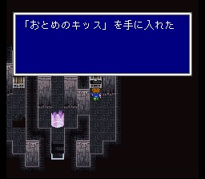
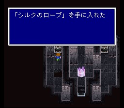
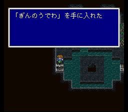
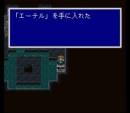

월스탑
입구에 들어가면 병사들과 왕이 쓰러져있고, 본래는 온순한 동물인 가루라가
난폭해져서 탑 최상층으로 갔다고 합니다. 길 따라 올라가시면서 아이템 챙기시고,
훔치기도 가끔 시도해 보시면서 나아갑시다. 덩굴을 타야 되는 길이 있으니 유심히
살피시고..

최상층에 도착하면 가루라와 대면합니다.
이 녀석은 공격력이
제법 세지만, 사이레스 걸어놓고 개구리의 노래를 불러주면
싱겁게 끝납니다.
가루라를 쓰러뜨렸지만 물의 크리스탈은 부서지고.. 이때 그것을 막으려던 병사가 가라프를 알고 있는 듯.. 새로운 직업들을 입수합니다. 바사커, 마법검사, 시마도사, 소환사, 적마도사입니다. 조각 중에 하나가 접근할 수 없는 곳에 떨어져 있는데, 나중에 제3세계에서나 얻게 되니 신경 끄세요. 이제 탑이 무너지고.. 일행도 바다에 떨어지나 실드라가 마지막 힘을 다해 일행을 구해냅니다.